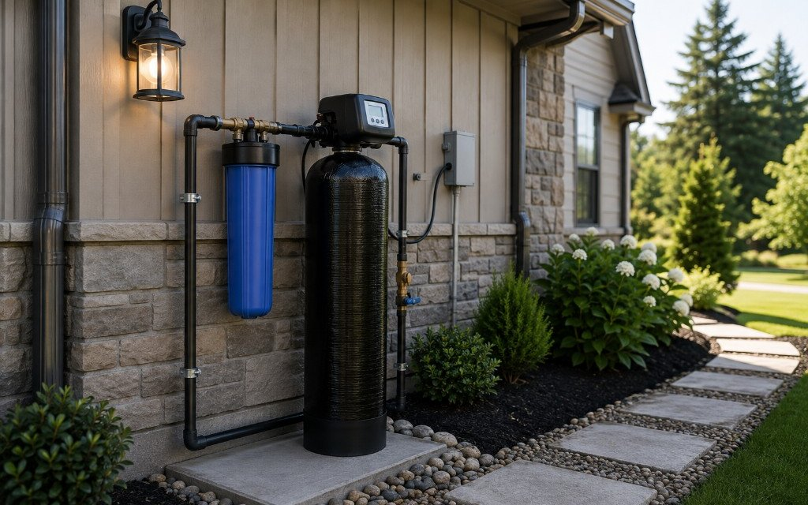

Whole-Home Water Filtration Services
Improve water quality throughout your entire home with filtration systems designed to reduce unwanted contaminants, odors, sediment, and common water concerns from every tap.
Explore serviceCapital Water Co. provides water filtration installation in St. Amant, LA for homeowners who want cleaner water at the tap without assembling the system themselves. We install whole-house water filtration, reverse osmosis, and water softeners based on how the house is plumbed.
Residential installation, start to finish
Smaller community, same install standard
Serving St. Amant, LA and surrounding communities.
OUR SERVICES • COMPREHENSIVE WATER FILTRATION SOLUTIONS
These service pages cover the systems Capital Water Co. installs for St. Amant homeowners.
Improve water quality throughout your entire home with filtration systems designed to reduce unwanted contaminants, odors, sediment, and common water concerns from every tap.
Explore service
Enjoy cleaner, better-tasting drinking water with advanced reverse osmosis systems that provide high-quality water for drinking, cooking, coffee, ice, and everyday use.
Explore service
Treat private well water concerns such as iron, sulfur odors, sediment, staining, and mineral issues with customized solutions built around your property’s water source.
Explore service
Reduce hard water minerals that can cause buildup on fixtures, dry skin, dull laundry, and strain on plumbing and appliances with a professionally installed water softener system.
Explore service
Improve taste and odor by reducing chlorine, chloramine, and other common water concerns with carbon filtration systems designed for fresher, cleaner water.
Explore service
Improve municipal water quality with treatment systems designed to reduce chlorine taste, odors, sediment, and other common city water concerns found in local homes.
Explore serviceFREQUENTLY ASKED ・ ANSWERS TO YOUR QUESTIONS
Questions we hear from St. Amant homeowners before a water filtration install.
At or near the main shutoff, often in a garage, utility closet, or exterior connection. We pick a spot you can reach for future filter changes.
Yes. Well water treatment is part of what we offer. We will not copy a city-water layout onto a well without reviewing the source and what you notice at the tap.
Someone who can approve shutoff access should be available. We keep you informed as connections are made and water is restored.
SERVICE AREA
Capital Water Co. installs water filtration systems in St. Amant and nearby Ascension Parish communities. If you are closer to Prairieville or Gonzales, those pages outline the same installation service for those towns.
Request a free consultation to talk through water filtration installation for your home.